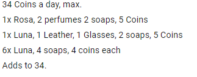
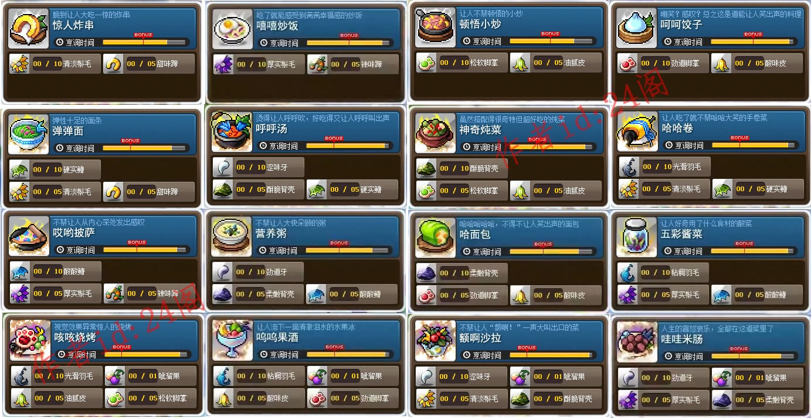
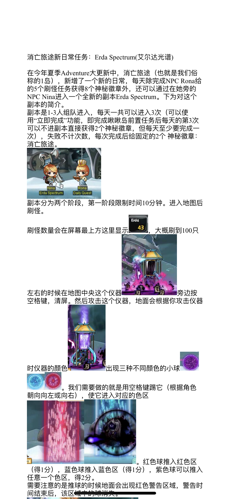
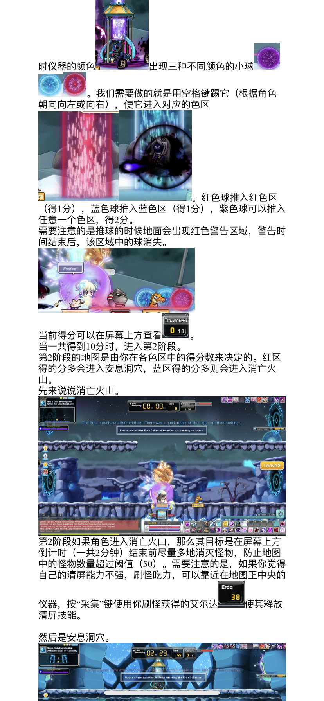
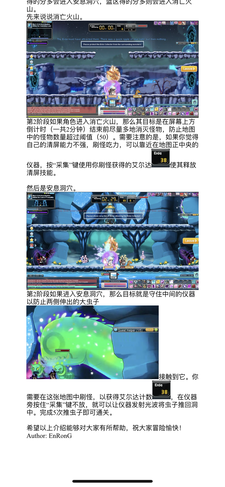

副本
日常副本
航海
航海最大金币获取方法

神秘河(岛球)日常
二岛菜谱

一岛新组队任务



AB周常
- 韩版黑暗天堂每周任务
- 机械坟墓周常不推荐任务

跑旗
跑旗4am PST | 7am EST 小技巧
- 最好有防滑鞋，边缘起跳，下凹三角形过左边缘瞬间起跳，上凸三角形过最高点后起跳
- 右上角跳到booster上后不要按任何方向键，按住跳不放，即可弹射2连跳到左边大炮后的平台
- 第二圈开始右下角的阶梯处，可以左跳到平台上接S技能，起跳在空中按S 和 ↑ 即可通过传送口到上方平台
- 如果有D技能，则可在左中上booster处，加速的瞬间按D，即可冲过
起源塔
其他副本
结婚小镇
Phantom Forest wanted daily(银币)
- Caught in the Storm—– Corrupted Stormcaster（推荐）
- The Lost Shadow—- Corrupted Shadowknight (推荐）
- Blind Flame—- Corrupted Flamekeeper
- Broken Arrow—- Corrupted Windreaver
- A Sword of Heartbreak—- Corrupted Master
- Dust to Dust—- Elderwraith
- Ashes to Ashes—- Krakian Spirit
- Logging Work—- Phantom Tree